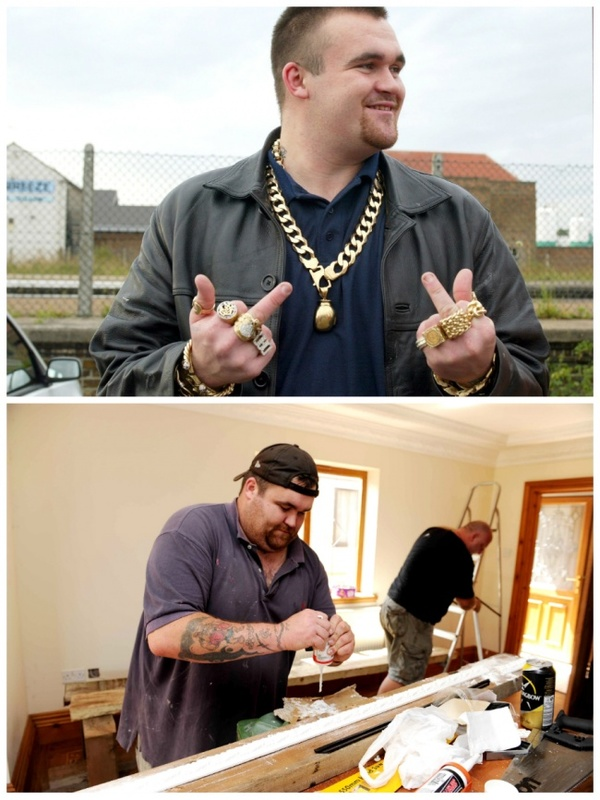

2002-ben, a kukásként dolgozó Mickey 10 millió fontot nyert a lottón, a pénz pedig annyira megrészegítette, hogy őrült költekezésbe kezdett: ékszereket vett magának, valamint egy 700.000 fontot (~ 239 millió forint) érő, medencével felszerelt luxusvillát, ahol óriási bulikat tartott.
Egy este a barátaival kocsikázott, amikor acélgolóykat lőtt ki egy katapultból, és 32 autót károsított meg azokkal. Néhány évnyi pazarlás után Mickey kifogyott a vagyonából, és ingatlanjától is meg kellett szabadulnia – 100.000 fontért (~ 34 millió forint) adta el – ahhoz, hogy ki tudja fizetni tartozásait. Jelenleg újra kukásként dolgozik, emellett bútorok javítását vállalja. Saját bevallása szerint ennek ellenére sem bán semmit.
